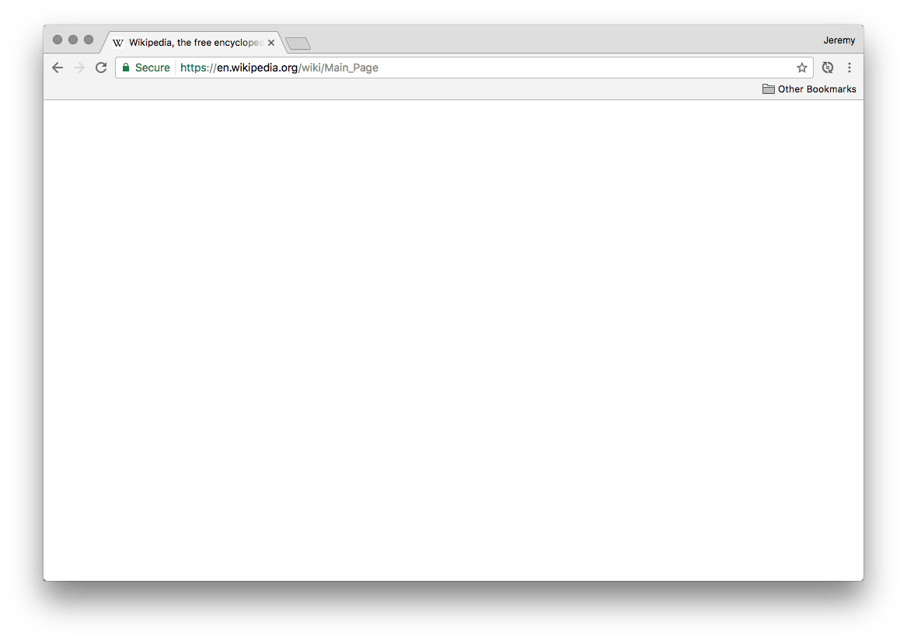

On Hornets and Honeybees

Meet the Asian Giant Hornet
Giant Hornet Stats
Roughly the size of your thumb
.63 cm (.25 in) stinger
Sting can dissolve human tissue
Leaves pheremones to alert other hornets
Top speed of 40 km/h (25 mph)

Eats Japanese Honeybees for dinner
(Well, the larvae)
Giant hornets don't mess around
One giant hornet can kill up to 40 honeybees per minute
30 giant hornets can dispatch a hive of 30,000 honeybees within a half hour
The Honeybee Defense

The hornet scout arrives

The scout is engulfed
(and cooked alive)
Teamwork
Saves the day
Web performance
is hard
The web is getting
Bloated
Average Total Page Sizes vs
Average Internet Speed (USA)

Average Total Page Sizes vs
Average Internet Speed (USA)

How does this happen?
Speed vs Speed to Market
How it all goes down
Project funding/contract procured
Timeline set
Project greenlit
IA and design created
Coding begins
Site launches
Client finds performance problems
Commence gnashing of teeth
How do we fix this?
Discuss Performance
Proactively
What's the worst that could happen?


Web Performance is a
User Experience
Problem
Until first paint...
There is no user experience
We've become
Disconnected
From our users
Crucial questions to ask:
"Who am I developing for?"
"How fast is the internet for my users?"
"Who am I Developing For?"
Different Users Have
Different Experiences
"How fast is the internet for my users?"
Mobile may be slower than you think
Make Data-driven Decisions
Google Analytics
StatCounter Global Stats
HTTP Archive
Akamai State of the Internet Connectivity Report
https://cindex.co
Developer Convenience
vs
The User Experience

CSS Framework Overhead
All Sizes Minified+gzip
JS Framework Overhead
All Sizes Minified+gzip
It's not just about file size...
...Parsing time matters, too.
Ask yourself...
Am I reimplementing what the browser already does?
Am I overengineering a solution?
Do I need [JS library] when in-browser methods exist?
Do I need a CSS framework?
If you insist on a library/framework
Look for smaller API-compatible options (e.g., Zepto, Preact)
Customize it if possible (e.g., Bootstrap, Modernizr)
Ensure it adds value for users, not just developers
Ensure your site fails reasonably well without it (can you curl it?)
For good measure...
Measure performance!
Performance problems
are invisible
in development
Testing Tips
Test multiple times in a session to build average metrics
Use a throttling profile to simulate actual connections
Build a throttling profile that resembles your users
Dev Testing (Easy Mode)

Chrome Dev Tools
Dev Testing (Normal Mode)
npm install -g sitespeed.io
sitespeed.io -b chrome -n 25 -d 1 -m 1 -c custom --latency 50 --downstreamKbps 750 --upstreamKbps 250 https://cindex.cositespeed.io
Dev Testing (Hard Mode)